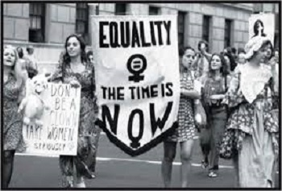
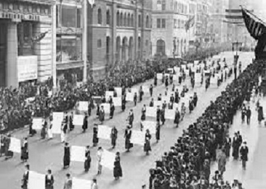

Women did not have the right to vote either in ancient Greece or in Rome, or in those few democratic systems that managed to break through in Europe by the end of the eighteenth century. Even when civil law was finally extended to all men, women were not given the right to vote. The issue of women's suffrage finally became a topic in the 19th century, when the first suffrage "movements" appeared. Suffrage movements were made up of women who fought and eventually won the right to vote. Their struggle lasted a very long time, taking place in stages. Historically, Great Britain and the United States are great examples of the struggle for women's suffrage in the nineteenth and twentieth centuries. This struggle then spread to women in other countries and gained a global character.
In Great Britain, women's suffrage began in the 19th century. Among the first to do so were women who participated in the chartist movement. The demand for women's suffrage was the subject of consideration by prominent liberal intellectuals of England from 1850, among whom Dion Stuart Mill and his wife, Harriet Taylor Mill stood out.
The first alliance for women's suffrage was formed in Manchester in 1865, and in 1867, Mil issued a petition to parliament numbering 1,550 signatures demanding women's suffrage. Although the Reform Bill, enacted in 1867, did not contain a provision concerning women's suffrage, in the meantime, women's suffrage associations were established in all major British cities. In 1870, they submitted several petitions to parliament to establish this right, totaling nearly three million signatures.
There was no progress in the following years, as no law on the right to vote passed by parliament implied the right to vote for women. None of the leading politicians of the time had the courage to oppose Queen Victoria's tradition and sharp disagreement with the goals of the women's movement. In 1869, however, parliament would allow taxpayers to vote in local elections, and in the decades that followed, women gained the right to participate in city councils. The right to vote in parliamentary elections was still denied to women, although in the meantime they gained considerable support in the parliament.
In 1867, several smaller associations united into one organization, The National Union of Women’s Suffrage Societies. This first major women's organization advocating for women's political rights led Millicent Fawcett. She believed that any form of violence would convince men that women should not be allowed to vote, so her organization advocated nonviolent solutions. Patiently and strategically, Millicent Fawcett constantly put forward arguments that pointed to a number of social illogicalities such as that women could take responsible positions in society (such as school boards), but they were not allowed to vote. It was absurd that women were obliged to obey the laws passed by parliament without having the right to participate in the adoption of those same laws.
Although she managed to convert some members of parliament, most of them further believed that women would simply not understand how parliament functioned. The performance of Millicent Fawcett was, in the opinion of a number of women, insufficient. They believed that women's activities must have a sensational character, in order to break into the public sphere.
The Women's Suffrage Movement was divided into two fractions when Emmeline Pankhurst and her daughters founded Women's Social and Political Union in 1903. This union continues to fight for women's suffrage and is remembered for its militant behavior in achieving this goal. She believed that if men were not able to listen to women's ideas, women should use force to force them to do so. The policy of this organization included the destruction of public goods, attacks on proletarians, obstruction of the work of parliament and the hunger strike (in detention).
With the return of the Liberal Party in 1906, the Suffragettes suffered several defeats. In that period, seven laws were passed that referred to the right to vote, but none of them recognized it for women. In response, many followed violent activities of the suffragettes. Churches were destroyed, they vandalized Oxford Street and tied themselves to Buckingham Palace, they leased boats and sailed on the Thames during the session of the parliament, and when passing by it through a megaphone they shouted "Abuse!". Some of them refused to pay taxes. They would also attack politicians when they go to work, destroy their houses and golf courses. If arrested, they continued their protest with the Hunger Strike. This type of protest got a great deal of public attention, and the British government suspected that this could go even worst if some of them died as a result of starvation. Therefore, prison wardens were ordered to force feed them. However, due to the negative public outcry, the violent diet was soon discontinued.
In the meantime, the public support is becoming more and more important to the suffrage movement, and numerous public demonstrations and processions are being organized. The government at the time had long sought a way to respond to this form of activism, largely because of the significant sympathy the citizens had for them. In the end, the government responded with a new tactic. This tactic allowed them to go on a hunger strike, which made them physically weaker and weaker.
When health condition was seriously impaired, they would be released from prison. In this way, the government protected itself, as it would not be harmed if the suffragette died out of prison. After their release from prison, they were too weak to continue the fight to fulfill their goal. When they regained strength they resumed their activities, were re-arrested for the most trivial reasons and the whole story would be repeated in the same way. From the government's point of view, this was a very simple but effective way to fight the suffragettes.
To respond to this tactic,suffragettes became more extreme. These events culminated in a dune that took place in June 1913, when Emily Davison threw herself under the king's horse and died. This act probably did more harm than good to the target of the suffragettes, given that she was a highly educated woman. Many men then asked the question - if educated women behave like this, then what can be expected from the less educated? How can they be given the right to vote at all?
It is quite possible that the suffragettes would have become even more aggressive if Great Britain had not entered the First World War a year later. Emmeline Pankhurst ordered the women to suspend their militant campaign and to support the government and its moves in the war in every way possible as a sign of patriotism. The contribution of women during the First World War was very significant for the British war efforts and made the public wholeheartedly advocate for the achievement of the suffragettes goal, for the right to vote for women. The need to introduce this right was finally recognized by the largest number of members of parliament.
Consequently, in February 1918, women were finally given the right to vote. This right, however, applied only to women aged 30 and over. In the same year, a decree was passed allowing women to run for parliament, and in 1928 the age at which women were given the right to vote was moved to 21 years of age, and their political rights were finally fully equated with those of men.

Since the founding of the United States, women have been excluded from voting. The promises of equality contained in the Declaration of Independence and the Constitution have not come true for a long time. Although the conditions of a religious nature disappeared soon after the American Revolution, the property and educational census will last for quite a long time. The first shifts occurred during the 1930s, and by 1860 all white men had gained the right to vote. The position of white women has not changed, and they are left without the right to wander about politics and without the right to run.
The movement for women's suffrage emerged in the early years of the 19th century, alongside the movement for the abolition of slavery. One of the women who showed great interest in participating in the struggle to abolish slavery was Lucretia Mott, who made a very public statement on the subject. Elizabeth Stanton soon joined the abolitionist forces. She and Lucretia Mott agreed that the rights of women should be equated with the rights of men, and in July 1848 they organized a convention in Seneca Falls, New York, when full civil rights for women were first demanded. Delegates stressed that women and men should be equal in all their rights, rejecting the division in which men belonged to the public and women belonged to the private sphere. The product of this convention is a declaration calling for women rights. The Seneca Falls Convention is therefore the official emergence of the suffragette movement in the United States. As this movement gained popularity, other women's rights rallies were held, even every year after that. A number of women's magazines were established.
In 1869 was establishedNational Woman Suffrage Association. The organization was headed by Susan B. Anthony and Elizabeth Stanton. In the same year, another organization was founded, the American Woman Suffrage Association. The two organizations merged in 1890, working together for the next 30 years.And that organization, led by Carrie Chapman Cat, was called the National American Women's Suffrage Association. Their platform relied on a moderate argument to which women, being fundamentally different from men, would restore moral order and harmony if they were allowed to vote.
It is important to note that the National American Women's Voting Association supported the racist ideology of the time, excluding women of African-American descent from membership. That is why women of African-American descent founded their organization in 1896, the National Association of Colored Women. In the years that followed, vigorous campaigns were conducted to persuade legislators to give women full voting rights through amendments to state constitutions. There have also been efforts to allow women to vote in presidential elections, and in some countries in local elections.
By 1910, the women’s suffrage movement in the United States had become massive. At the time, some of the American suffragettes visited the UK to take part in demonstrations by British and learned something about their organization in the fight for the right to vote. Upon returning to the United States, they used British tactics. They often stood guard in front of the White House, accusing the then President of the United States, Woodrow Wilson, of not having the right to vote yet.
By 1915, several states had given in to the demands of the suffrage movement, so women won the right to vote in ten federal states. Each of these states has increased the number of its representatives in Congress, who are partially elected by women.
World War I significantly reduced opposition to the introduction of women’s suffrage. The two largest parties agreed that women should be given the right to vote. The amendment concerning this right received the necessary two-thirds majority in both houses in January 1918, and then in the US Senate, in June 1919. The biggest problem was the states of the southern United States. Many Southerners believed that the supremacy of whites would be called into question if women were given the right to vote, because of their sensitivity.
On August 20, 1920, there was a real drama before the American right to vote. All but one of the 35 states ratified the 19th Amendment, the state of Tennessee. All the main leaders of the suffrage movement, along with many journalists from all parts of the United States, gathered in Nashville, in the state of Tennessee to follow the outcome of the vote to see if this country will ratify the amendment and thus enable its adoption at the US level. The situation was unresolved in the first two votes, and in the third round of voting, one of the members of parliament, Harry Burn, changed his mind and voted in favor of the amendment. That act caused general confusion among those present and he was forced to flee from the insane crowd of opponents of women's suffrage.On August 26, 1920, the Secretary of State promulgated the 19th Amendment as an integral part of the U.S. Constitution
Top of the page